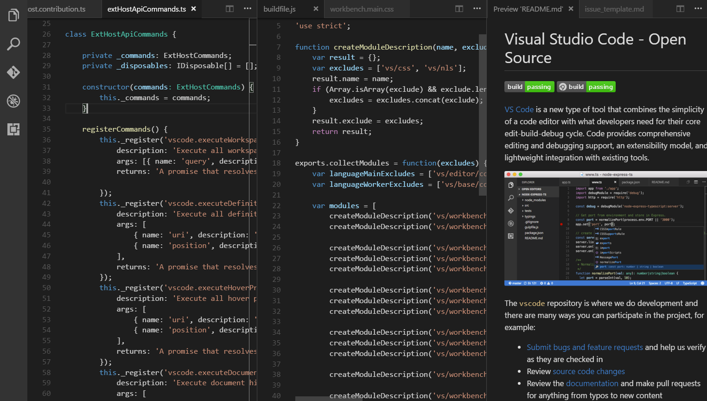
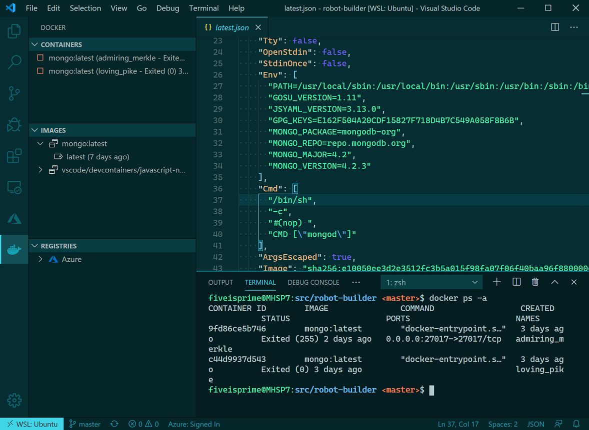

Visual Studio Code
Version 1.43
Getting Started
Visual Studio Code is a lightweight but powerful source code editor which runs on your desktop and is available for Windows, macOS and Linux. It comes with built-in support for JavaScript, TypeScript and Node.js and has a rich ecosystem of extensions for other languages (such as C++, C#, Java, Python, PHP, Go) and runtimes (such as .NET and Unity). Begin your journey with VS Code with these introductory videos.
- Install Windows 10 Insider Preview build 18975 (Slow) or later for WSL 2.
- Install Ubuntu from the Microsoft store.
- Enable WSL 2 by following this guide.
- Install the Remote - WSL extension for VS Code.
- Install the Docker WSL 2 Technical Preview.
